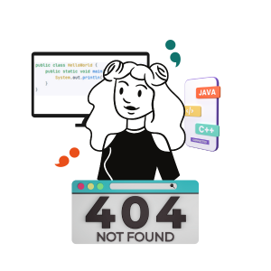
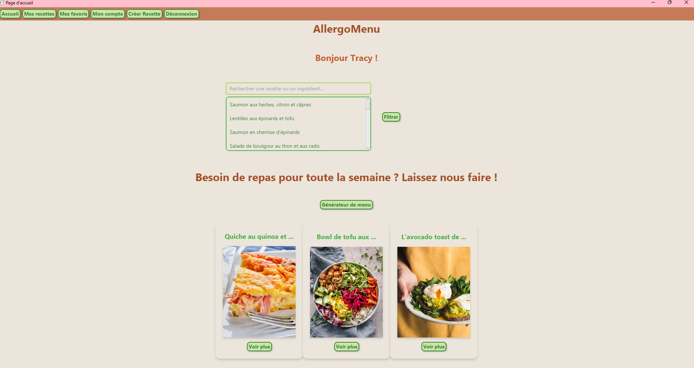
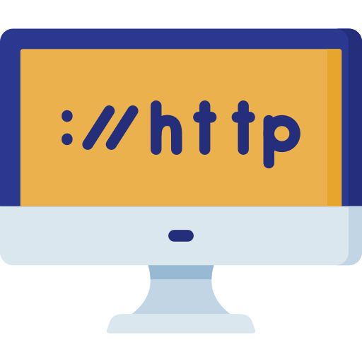

Adèle Médoc
Bienvenue sur mon portfolio
A propos
Je m’appelle Adèle, j’ai 26 ans et je suis actuellement en BTS SIO option
slam, une formation
continue d'une année au GRETA de Quimper.
J’ai commencé cette formation dans le cadre d’une reconversion professionnelle, après avoir
exercé le métier d’infirmière.
Mon attrait pour la programmation a commencé lorsque j'ai découvert le langage Python.
J'ai réalisé quelques projets : comme une calculatrice et des petits programmes permettant,
par exemple, de vérifier si un nombre est premier ou d’afficher des motifs à l’aide de
boucles.
Ces expériences m'ont permis de comprendre l'importance de la réflexion dans le
développement informatique. La résolution de problèmes et la structuration de la pensée pour
trouver des solutions efficaces sont des aspects qui me plaisent particulièrement.
En outre, j'apprécie le fait que le développement informatique ne soit pas seulement
technique, mais aussi créatif. Chaque projet, même simple, est une occasion d'exprimer ma
créativité et d'apprendre de nouvelles choses.

Mon parcours en informatique
Projet professionnel
Dans le cadre de mon parcours, j'ai choisi de m'orienter vers une alternance pour obtenir un titre professionnel de niveau licence en tant que Concepteur Développeur d'Application.
-
 Approfondir mes compétences techniques
Approfondir mes compétences techniques
-
Gagner en autonomie grâce à des missions réelles
-
M’immerger dans une équipeprofessionnelle
-
Préférence pour le développement logiciel
Technologies
langages
logiciels utilisés
Projets
mini-calculatrice
Nov 2024
Ce programme permet d'effectuer des opérations mathématiques entre deux nombres réels : addition, soustraction, multiplication et division (avec gestion de la division par zéro). L'utilisateur entre deux nombres et choisit une opération via un menu. Le résultat est calculé et affiché en fonction du choix.
Le code ici !La fleur
Sep 2024
Réalisation d'un site en html/css et PHP, avec une base de données en MySQL
Le code ici !Installation et configuration de GLPI
Nov 2024
Ce projet consistait à déployer l’outil de gestion de parc informatique et de service d’assistance GLPI en environnement local à l’aide de WAMP.
Le compte rendu ici !Tempora 1er projet
Dec 2024
Dans le cadre de ce projet, j’ai participé à la reprise d’un projet existant en apportant des améliorations à l’interface homme-machine, notamment par la refonte d’un formulaire avec l’ajout de nouvelles fonctionnalités. J’ai également contribué à la modélisation du projet en réalisant des diagrammes UML (cas d’utilisation, classes, séquence) ainsi que des maquettes d’interface, afin de mieux structurer le développement et améliorer l’expérience utilisateur.
Les images ici !Installation et configuration d’un réseau d’entreprise sous Windows Server
Jan 2025
Ce projet avait pour objectif de mettre en place un réseau d’entreprise en utilisant Windows Server 2016 et Windows 10 pour le poste client. J’ai installé et configuré Active Directory, le serveur DNS et le serveur DHCP, puis intégré un poste client au domaine. J’ai également créé une arborescence d’unités d’organisation, les comptes utilisateurs, groupes de sécurité, et attribué des droits d’accès personnalisés aux partages de fichiers selon les profils métier.
Le compte rendu ici !


AllergoMenu
Fev 2025
AllergoMenu est une application Java développée en groupe dans le cadre du BTS SIO, permettant aux utilisateurs de trouver et publier des recettes, ainsi que générer automatiquement des menus adaptés à leurs allergies ou préférences alimentaires. Le projet suit une architecture MVC
Le code ici !Tempora 2ème projet
Mars 2025
Dans ce projet, j’ai contribué au développement de la page des logs dans la nouvelle version de l’application, en utilisant le framework Clarity Design avec Angular pour le front-end. Côté back-end, l’API était développée en Scala, et j’ai utilisé Postman pour tester les requêtes HTTP et valider les échanges avec le serveur.
Les images ici !


AllergoMenuWeb
Avril 2025
Pour ce projet, nous avons travaillé sur AllergoMenuWeb, une version web de l’application AllergoMenu développée en Java avec une interface utilisateur enrichie par du CSS.
Le code ici !
site github page pour le portefolio
Avril 2025
Dans ce projet, j’ai contribué au développement de la page des logs dans la nouvelle version de l’application, en utilisant le framework Clarity Design avec Angular pour le front-end. Côté back-end, l’API était développée en Scala, et j’ai utilisé Postman pour tester les requêtes HTTP et valider les échanges avec le serveur.
Le code ici !